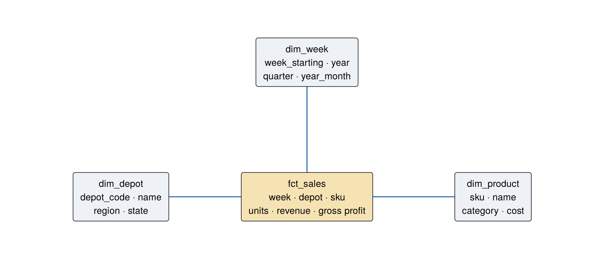

CREATE OR REPLACE TABLE gold.dim_product AS
SELECT sku, product_name, category, pack_size, unit_cost_ngn, list_price_ngn,
round(1 - unit_cost_ngn / list_price_ngn, 3) AS list_margin
FROM silver.products8 Gold: model for decisions
🔵 Practitioner
| What | Dimensional models (facts and dimensions in star schemas) and business marts, built from silver |
| Why | Decision-makers ask questions shaped like “measure by this and that”. Star schemas answer every such question with the same simple join, fast |
| When | Once silver is stable. Gold changes when the business questions change, not when sources change |
| Who | Analytics engineers design it with the business owner of each subject area |
8.1 Facts, dimensions and grain
- A fact is a measurement of a business event: units sold, naira remitted, barrels produced, minutes of downtime. Facts are numbers you add up.
- A dimension is the context you slice by: who, what, where, when. Depot, product, employer, well, week.
- The grain is the exact meaning of one row in a fact table, stated in a sentence. Declare the grain before writing any Structured Query Language (SQL). Most modelling errors are grain errors.
Grain of
gold.fct_sales: one row per week × depot × stock-keeping unit (SKU), recording units, revenue and gross profit for that combination.
8.1.1 Three kinds of fact table
| Type | One row per… | Example | Typical question |
|---|---|---|---|
| Transaction | event | one purchase order (PO) line, one remittance, one complaint | “How many complaints came in via WhatsApp?” |
| Periodic snapshot | entity × period | depot × SKU × week; well × day; account × month-end | “What was the trend in weekly sales?” |
| Accumulating snapshot | process instance, updated as it progresses | a purchase order: ordered → shipped → received → paid | “Where do POs get stuck, and for how long?” |
8.2 Build the star
CREATE OR REPLACE TABLE gold.dim_depot AS
SELECT depot_code, depot_name, region, state, opened
FROM silver.depot_history WHERE is_currentCREATE OR REPLACE TABLE gold.dim_week AS
SELECT week_starting,
year(week_starting) AS year,
quarter(week_starting) AS quarter,
strftime(week_starting, '%Y-%m') AS year_month,
weekofyear(week_starting) AS iso_week
FROM (SELECT DISTINCT week_starting FROM silver.sell_out)CREATE OR REPLACE TABLE gold.fct_sales AS
-- Grain: one row per week x depot x SKU (a periodic snapshot fact)
SELECT s.week_starting, s.depot_code, s.sku,
s.units_sold, s.revenue_ngn,
s.revenue_ngn - s.units_sold * p.unit_cost_ngn AS gross_profit_ngn,
s.on_promotion, s.discount_pct, s.stockout_flag
FROM silver.sell_out s
JOIN silver.products p USING (sku)CREATE OR REPLACE VIEW gold.v_sales AS
-- 'One big table' for the semantic layer and BI tools: the star, pre-joined
SELECT f.*, d.depot_name, d.region, d.state, p.product_name, p.category, p.pack_size,
w.year, w.quarter, w.year_month
FROM gold.fct_sales f
JOIN gold.dim_depot d USING (depot_code)
JOIN gold.dim_product p USING (sku)
JOIN gold.dim_week w USING (week_starting)CREATE OR REPLACE TABLE gold.mart_depot_month AS
SELECT year_month, region, depot_code, depot_name,
SUM(revenue_ngn) AS revenue_ngn, SUM(gross_profit_ngn) AS gross_profit_ngn,
SUM(units_sold) AS units, AVG(stockout_flag) AS stockout_rate
FROM gold.v_sales GROUP BY ALL
Check the model with the question every star must answer cheaply: measure by dimension by dimension.
SELECT p.category, d.region, round(SUM(f.gross_profit_ngn) / SUM(f.revenue_ngn) * 100, 1) AS gross_margin_pct
FROM gold.fct_sales f
JOIN gold.dim_product p USING (sku)
JOIN gold.dim_depot d USING (depot_code)
GROUP BY ALL ORDER BY 1, 2| category | region | gross_margin_pct |
|---|---|---|
| Beverages | North Central | 52.4 |
| Beverages | North West | 52.7 |
| Beverages | South East | 52.9 |
| Beverages | South South | 53.4 |
| Beverages | South West | 53.2 |
| Foods | North Central | 58.0 |
| Foods | North West | 57.1 |
| Foods | South East | 58.8 |
| Foods | South South | 58.7 |
| Foods | South West | 58.4 |
8.2.1 Star or “one big table”?
gold.v_sales is a wide view: the star, pre-joined. Use both:
- Star tables keep storage small and dimensions consistent, and they are what Power BI’s model view expects.
- The wide view is what the semantic layer, the artificial intelligence (AI) assistant and casual SQL users want: one object, no joins to get wrong.
8.3 The enterprise bus matrix
When gold grows past one subject area, plan it with a bus matrix. Rows are business processes (facts), columns are shared dimensions. A tick means the fact uses that dimension. Dimensions used by several facts must be conformed: one dim_depot, used by sales, inventory and deliveries alike.
| Process (fact) ↓ / Dimension → | Date | Depot | Product | Supplier | Customer | Channel |
|---|---|---|---|---|---|---|
Sell-out (fct_sales) |
✓ | ✓ | ✓ | |||
Purchasing (fct_po) |
✓ | ✓ | ✓ | ✓ | ||
Marketing (fct_marketing) |
✓ | ✓ | ||||
Customer reviews (fct_review) |
✓ | ✓ | ✓ |
8.4 An accumulating snapshot: purchase orders
if (!has_table(con, "silver", "purchase_orders")) {
bronze_ingest(con, "supply_chain_pos.csv")
run_sql(con, "silver", "purchase_orders", "SELECT po_id, CAST(po_date AS DATE) po_date, CAST(received_date AS DATE) received_date,
CASE WHEN supplier_id = 'SUP-CEDAR-NG' THEN 'SUP-CEDAR' ELSE supplier_id END supplier_id, material_group,
CAST(order_value_ngn AS DOUBLE) order_value_ngn, CAST(on_time AS INTEGER) on_time,
CAST(received_date AS DATE) < CAST(po_date AS DATE) date_error FROM bronze.supply_chain_pos")
}
run_sql(con, "gold", "fct_po_lifecycle", "
SELECT p.po_id, p.supplier_id, p.material_group, p.po_date, p.received_date, p.order_value_ngn,
CAST(b.promised_lead_days AS INTEGER) AS promised_days,
date_diff('day', p.po_date, p.received_date) AS actual_days,
CASE WHEN p.date_error THEN 'date error'
WHEN date_diff('day', p.po_date, p.received_date) <= CAST(b.promised_lead_days AS INTEGER) THEN 'on time'
ELSE 'late' END AS delivery_status,
greatest(date_diff('day', p.po_date, p.received_date) - CAST(b.promised_lead_days AS INTEGER), 0) AS days_late
FROM silver.purchase_orders p JOIN bronze.supply_chain_pos b USING (po_id)")
dbGetQuery(con, "SELECT supplier_id, COUNT(*) AS pos,
round(100 * AVG((delivery_status = 'on time')::INT), 1) AS on_time_pct,
round(AVG(days_late) FILTER (WHERE delivery_status = 'late'), 1) AS avg_days_late_when_late,
SUM((delivery_status = 'date error')::INT) AS date_errors
FROM gold.fct_po_lifecycle GROUP BY 1 ORDER BY on_time_pct")| supplier_id | pos | on_time_pct | avg_days_late_when_late | date_errors |
|---|---|---|---|---|
| SUP-DELTA | 1186 | 59.8 | 9.3 | 19 |
| SUP-GONDA | 801 | 62.2 | 10.4 | 12 |
| SUP-FIRTH | 908 | 66.7 | 7.4 | 9 |
| SUP-BRIDGE | 1462 | 67.4 | 6.3 | 21 |
| SUP-HARMATTAN | 726 | 82.9 | 5.8 | 13 |
| SUP-EMEKA | 939 | 83.5 | 4.7 | 11 |
| SUP-ALPHA | 1714 | 85.1 | 3.9 | 18 |
| SUP-CEDAR | 1264 | 96.7 | 2.4 | 23 |
Note
This gold table recomputes on-time status from dates rather than trusting the source’s on_time flag. Comparing the two is itself a good data test. Where they disagree, one of them is wrong.
8.5 🏋️ Exercises
E8.1 🟢 Write the grain sentence for gold.mart_depot_month. Is it a transaction, periodic snapshot or accumulating snapshot table?
E8.2 🟡 Build gold.fct_marketing_weekly (week × channel) with spend, conversions and cost per acquisition. Join it to weekly revenue to show spend vs revenue by week. What grain mismatch must you handle?
E8.3 🔴 Design (on paper, then in SQL) a gold model for pension remittances: dim_employer, dim_month, and fct_remittance at employer × month with expected, remitted, shortfall and days late. Add mart_compliance_month with compliance rate by sector.
Solutions
E8.1. “One row per calendar month × depot, with revenue, gross profit, units and stockout rate.” It is a periodic snapshot, aggregated from the weekly fact.
run_sql(con, "gold", "fct_marketing_weekly", "
SELECT week_starting, channel, SUM(spend_ngn) spend_ngn, SUM(conversions) conversions,
SUM(spend_ngn) / NULLIF(SUM(conversions), 0) AS cpa_ngn
FROM silver.marketing_spend GROUP BY ALL")
dbGetQuery(con, "
WITH m AS (SELECT week_starting, SUM(spend_ngn) spend FROM gold.fct_marketing_weekly GROUP BY 1),
s AS (SELECT week_starting, SUM(revenue_ngn) revenue FROM gold.fct_sales GROUP BY 1)
SELECT round(corr(spend, revenue), 3) AS weekly_correlation, COUNT(*) AS weeks
FROM m JOIN s USING (week_starting)")| weekly_correlation | weeks |
|---|---|
| 0.111 | 118 |
E8.2. The grain mismatch: marketing is week × channel, sales is week × depot × SKU. Aggregate both to the common grain (week) before joining. Joining at different grains multiplies rows, a fan-out. Correlation is not attribution, either. That needs an experiment (see the pensions playbook) or a marketing-mix model.
8.6 ✅ Mastery check
- State the grain of three fact tables you know from your own organisation.
- What makes a dimension “conformed”, and why does it matter?
- When would you choose an accumulating snapshot?
8.7 🏢 In the organisation
Gold tables are products, and they need owners, documentation and change control. A change to fct_sales can break twenty dashboards, so treat it like an application programming interface (API) change: announce it, version it (v_sales_v2) and retire old versions on a schedule.